11/1 フルコンプ千葉店のニュータイプチャレンジ 2026 MISSION5（64名規模）で6位に入った青/白デッキです。青/白の入賞デッキ350本のうち97.7%が入れるストライクフリーダムガンダムとキラ・ヤマトを1枚も入れず、Lv.4以下のカードだけで50枚を組んでいます。青/白での採用率が10%未満のカードは14種41枚です。
デッキリスト
ユニット38枚・パイロット8枚・コマンド2枚・ベース2枚。大会ページ: フルコンプ千葉店 11/1。
| カード | 種類 | 色 | Lv | コスト | AP/HP | 枚数 | 青/白での採用率 |
|---|---|---|---|---|---|---|---|
| GD01-078 ミストラル 珍 | ユニット | 白 | 1 | 1 | 1/1 | 2 | 0.3% (1) |
| GD01-008 ガンタンク 珍 | ユニット | 青 | 2 | 1 | 1/2 | 4 | 0.9% (3) |
| ST01-005 ジム 珍 | ユニット | 青 | 2 | 1 | 2/2 | 4 | 0.3% (1) |
| GD05-074 トーラス（ノイン機） 珍 | ユニット | 白 | 2 | 2 | 3/1 | 2 | 0.3% (1) |
| GD05-080 ギャバン専用ボルジャーノン 珍 | ユニット | 白 | 3 | 1 | 1/3 | 3 | 0.3% (1) |
| EB01-015 試作アッシマーTR-3［キハール］ 珍 | ユニット | 青 | 3 | 2 | 1/4 | 3 | 0.3% (1) |
| GD01-009 Gファイター 珍 | ユニット | 青 | 3 | 2 | 3/2 | 2 | 0.3% (1) |
| GD01-016 ジェガン 珍 | ユニット | 青 | 3 | 2 | 2/3 | 4 | 0.3% (1) |
| GD01-018 リゼル 珍 | ユニット | 青 | 3 | 2 | 4/3 | 4 | 0.9% (3) |
| GD01-075 ダリルバルデ 珍 | ユニット | 白 | 3 | 2 | 4/2 | 3 | 0.3% (1) |
| GD04-073 ∀ガンダム 珍 | ユニット | 白 | 4 | 2 | 3/3 | 3 | 0.3% (1) |
| ST01-001 ガンダム | ユニット | 青 | 4 | 3 | 3/4 | 4 | 52.0% (182) |
| GD05-100 カトル・ラバーバ・ウィナー 珍 | パイロット | 白 | 4 | 1 | — | 4 | 0.9% (3) |
| ST01-010 アムロ・レイ | パイロット | 青 | 4 | 1 | — | 4 | 91.7% (321) |
| GD04-101 優しい心根 珍 | コマンド | 青 | 3 | 1 | — | 1 | 6.0% (21) |
| GD01-100 覚悟の表れ | コマンド | 青 | 4 | 3 | — | 1 | 82.9% (290) |
| ST02-016 コルシカ基地 珍 | ベース | 青 | 3 | 3 | —/5 | 2 | 2.9% (10) |
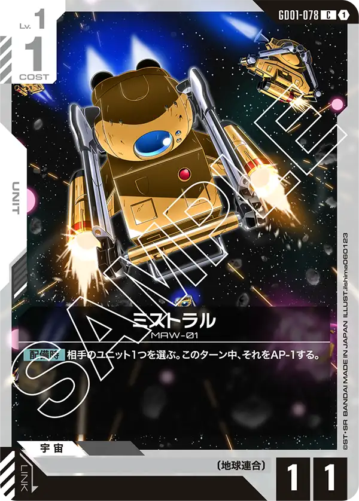

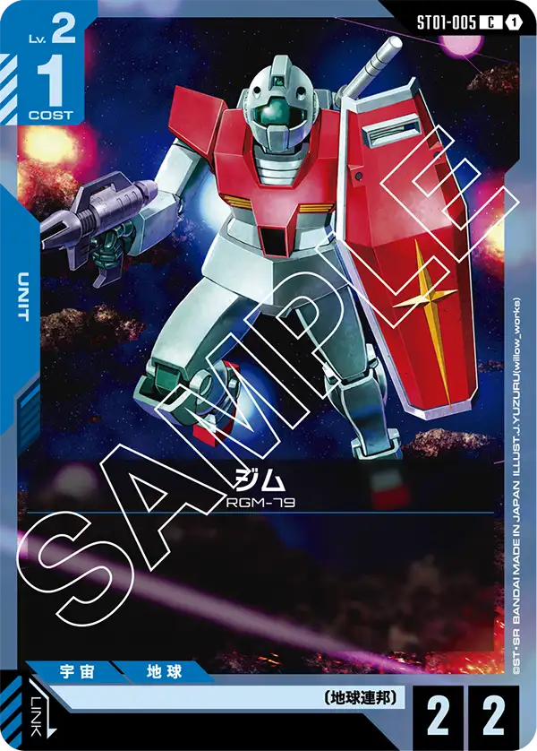
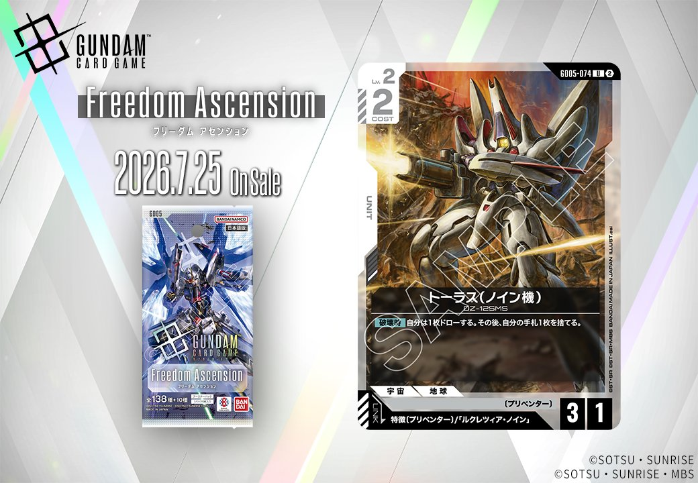
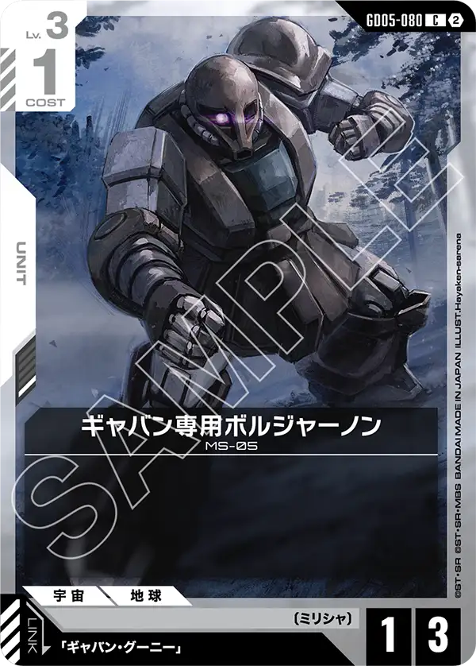
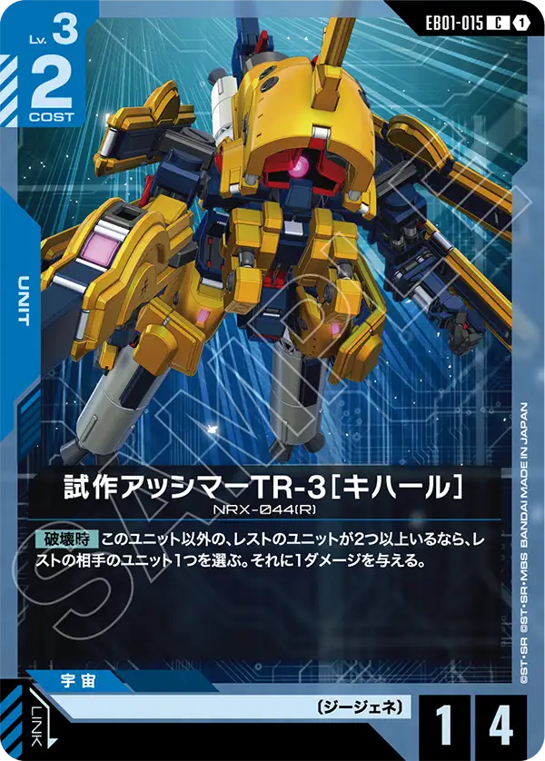
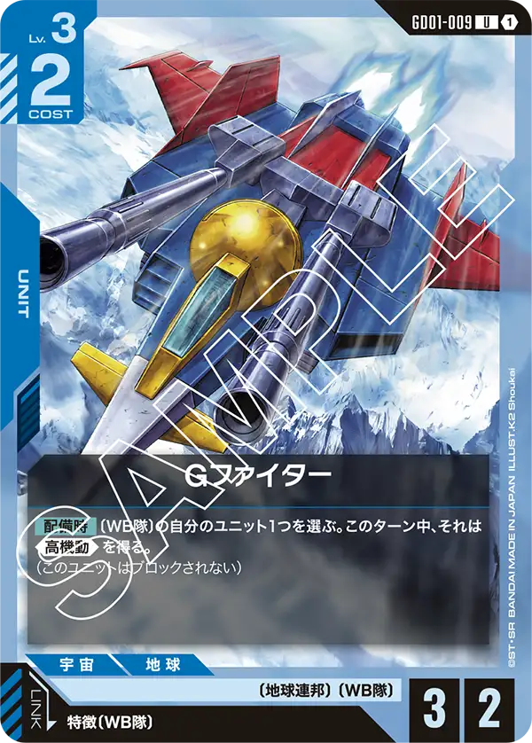
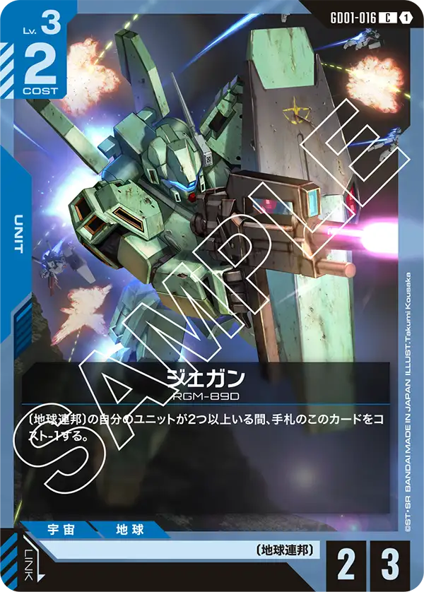

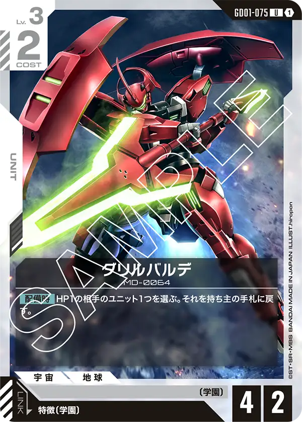
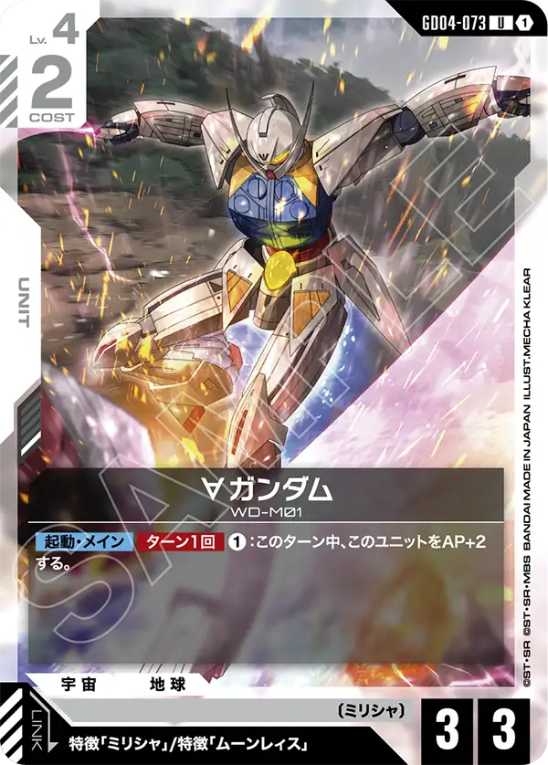

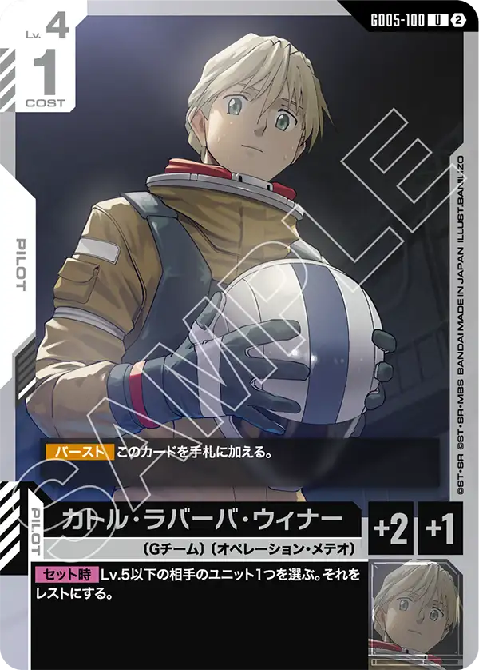

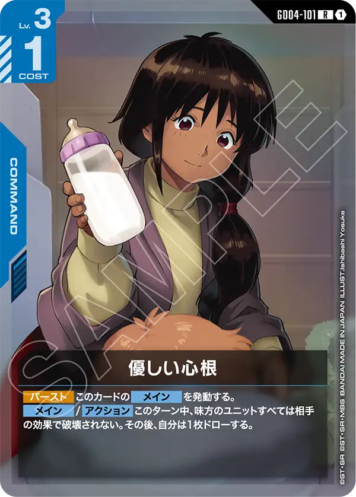


構成の見どころ
デッキ内の最大レベルが4、最大コストが3と非常に軽いデッキとなっている。
ユニットの最も高いレベルはガンダム[ST01-001]となっており、様々なデッキで中盤のテンポを取るカードとなっているカードが切り札を担っているといえる。
デッキの中を見ると地球連邦が多く採用されており、ジェガン[GD01-016]のコストを下げる効果は難なく使う事ができるだろう。
特徴的なのはアムロ・レイ[ST01-010]とカトル・ラバーバ・ウィナー[GD05-100]のセット。
アムロ・レイ[ST01-010]は様々なデッキに採用がされているがカトル・ラバーバ・ウィナー[GD05-100]の採用はなかなか見ないだろう。
効果はアムロ・レイ[ST01-010]と同様にセット時に相手をレストにする効果。
ただし、異なる点としてアムロ・レイ[ST01-010]は「HP5以下」が対象なのに対して、カトル・ラバーバ・ウィナー[GD05-100]は「Lv.5以下」と言う点には気をつけたい。
基本的な流れは相手をレストにして物量で押し切るような形になると思うが、相手をレストにするだけでは勝つのは難しいだろう。
重要なのはレストにしたユニットをそのまま放置するのか処理するのかと言う点になるが、このデッキでは最小限のリソースで処理をすることを選んでいる。
βから一定の評価を持っているガンタンク[GD01-008]でレストの相手にダメージを与えるのはもちろん珍しいカードとして試作アッシマーTR-3［キハール］[EB01-015]とダリルバルデ[GD01-075]もこのデッキに採用されている。
試作アッシマーTR-3［キハール］[EB01-015]はガンタンクと似た効果を持つが、破壊時にレストのユニットが2体以上いるならレストのユニットに1ダメージを与える。
ガンタンク[GD01-008]と禁止セットに採用されているM1アストレイ（シュライク装備）[GD05-015]や禁止カードとなっているアンクシャ[GD01-020]のかわりをこのカードが担っているだろう(https://gcg-stats.com/restrictions.html)。

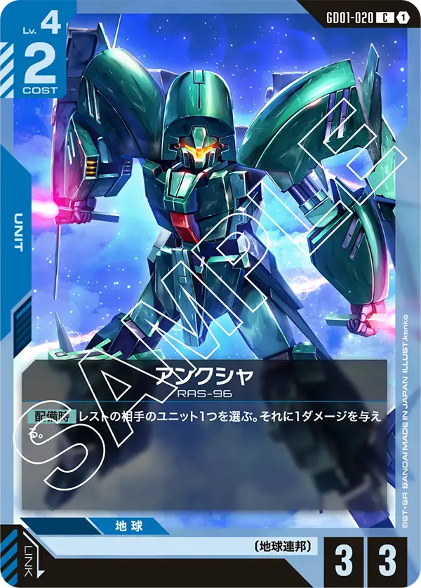
ダリルバルデ[GD01-075]は配備時にHP1のユニットを手札に戻す効果を持っており、削った相手ユニットを手札に戻すことで盤面の数を変えて、ダメージレースで勝つかブロッカーを手札に戻して物量で押す両方の役割をこなす事ができる。
その他にも自身APを上げてAPが5まで上がる∀ガンダム[GD04-073]が採用されており、ガンダム[ST01-001]のセット中効果があればAP6まで上昇できるのでHP6のベースを超える事ができ、Gファイター[GD01-009]の効果で高機動をもたせる事ができるため最後の一押しも可能になっている。
運営のひとこと
以前から青白アグロと言うデッキはちらほら見かけられていたが、構築の内容を見直し入賞した。
ST11～14のカードは採用されていないため、昔から考えられた構築が華を開いたと言えよう。
地球連邦が多めに採用されているデッキにはジャブロー[GD04-122]が採用されている形が多いが、このデッキではできるだけアタックするユニットを減らしたくないのか採用されていない、いわゆる超攻撃的な構築といえるだろう。
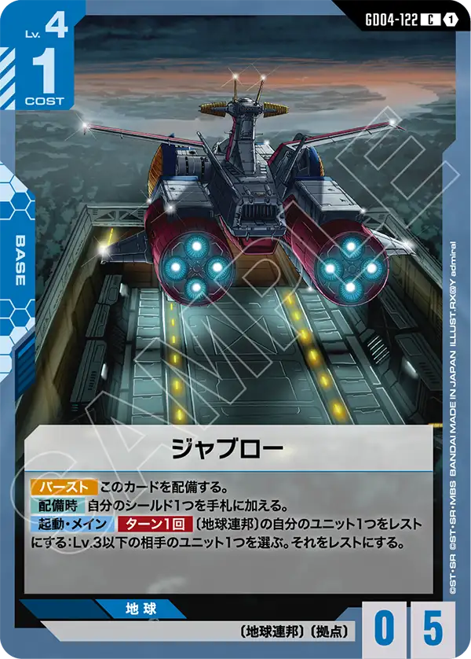
中盤以降は様々なデッキで強力なカードが登場してくるため、中盤に差し掛かる前にほぼほぼ決めきる攻めっけが必要となるが、変にユニットに攻撃を仕掛ける必要のあるカードも無いためこのデッキを使うときはシールドへの攻撃をどれだけできるかを考えてユニットには最小限の確認を行うのみで良いだろう。
数え方
採用率は10/5〜11/1のシリアルカードチャレンジ 10月とニュータイプチャレンジ 2026 MISSION5の入賞デッキのうち、デッキカラーが青/白の350本を母数にした。「珍」は青/白での採用率が10%未満のカード。64名規模の大会は公式順位どおり各順位2名で、このデッキは公式の12位を6位と数えた。デッキリストが公開されていない入賞デッキは数に入れていない。数字は公式の大会結果から自動で集めた集計で、誤りに気づいたらXアカウント（@gcg_stats）のDMで教えてほしい。